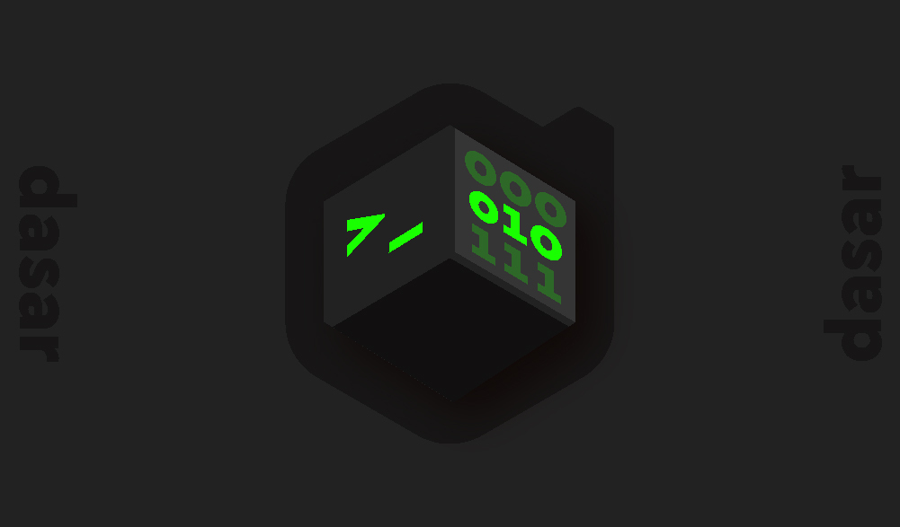
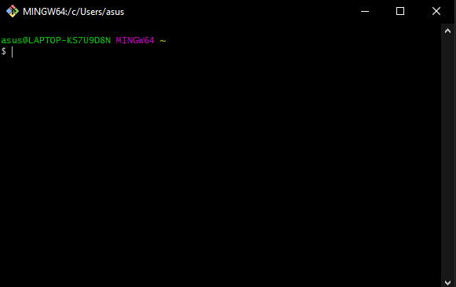
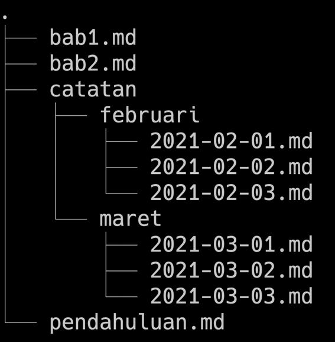

Home > Unix Command Line
Unix Command Line
A. Shell
Shell merupakan salah satu jenis program yang ada pada komputer untuk pengguna dapat berkomunikasi atau memerintahkan sistem operasi. Shell menurut jenis tampilannya dibagi menjadi dua yaitu Graphical User Interface (GPU) dan Command Line Interface (CLI)
B. Command Line Interface
CLI merupakan salah satu jenis aplikasi yang interaksinya hanya berbasis tulisan atau command untuk memerintahkan perangkat komputer dalam menjalankan suatu tugas tertentu.
Berikut adalah beberapa contoh aplikasi yang berbasis CLI :
- sh
- bash
- zsh
- cmd.exe
C. Terminal Emulator
{kind=link}
Terminal Emulator merupakan sebuah program atau media yang menghubungkan antara pengguna dan komputer. Di terminal emulator inilah pengguna dapat mengetikan atau memberikan perintah pada komputer.
D. File System Structure
{kind=link}
File System Structure merupakan sebuah sistem file yang mengatur bagaimana data dapat disimpan dalam sistem operasi. Gambar di atas adalah contoh gambaran dari File System Structure yang ada pada OS Windows.
E. Command / Perintah CLI
Berikut adalah command atau perintah-perintah yang bisa kita jalankan dengan Command Line Interface (CLI) melalui Terminal Emulator untuk memerintahkan perangkat komputer dalam menjalankan tugas yang kita inginkan.
1. Melihat lokasi folder atau file yang sedang dibuka
pwd
2. Melihat isi folder
ls
3. Melihat isi file
nano nama-file
4. Berpindah folder
cd nama-folder
5. Membuat folder
mkdir nama-folder
6. Membuat file
touch nama-file
7. Menyalin folder atau file
cp asal-file tujuan-file
8. Memindahkan folder atau file
mv asal-file tujuan-file
9. Menghapus folder atau file